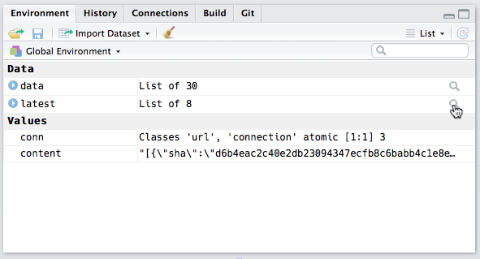
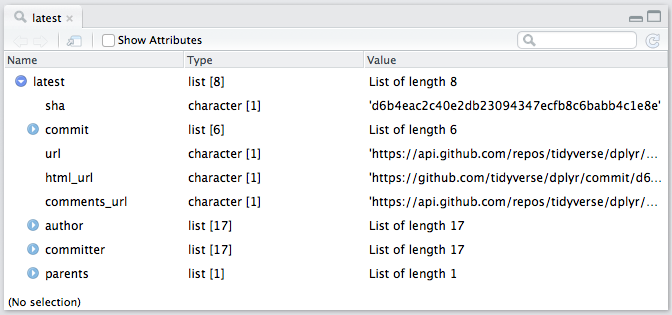
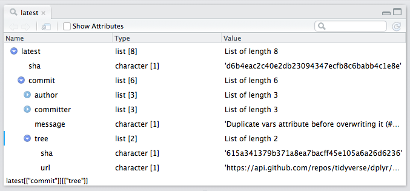
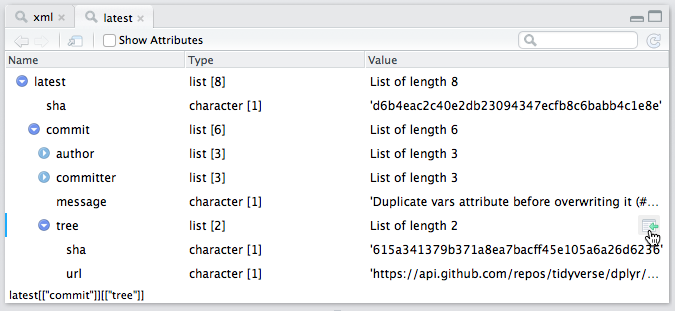
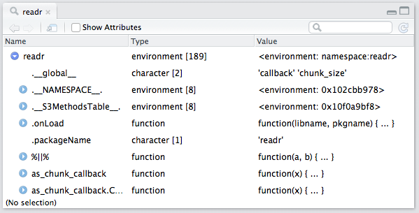
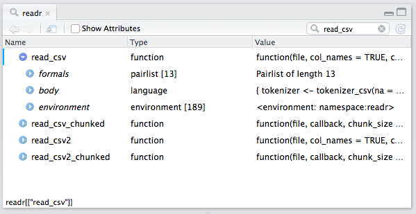
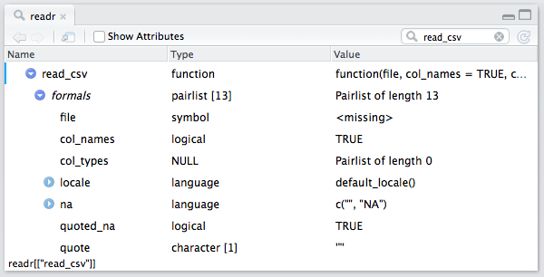
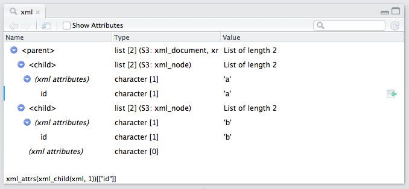

2017-08-22
Today, we’re continuing our blog series on new features in RStudio 1.1. If you’d like to try these features out for yourself, you can download a preview release of RStudio 1.1.
You might already be familiar with the Data Viewer in RStudio, which allows for the inspection of data frames and other tabular R objects available in your R environment. With RStudio v1.1, it will be possible to inspect hierarchical (list-like) R objects as well, using the Object Explorer.
The same workflows you’re familiar with for opening the data viewer apply when opening the object explorer. Let’s start by inspecting some data returned by the GitHub API – we’ll inspect the latest commit made on the dplyr repository. First, let’s start by downloading and reading this data into R:
```{r}
# read from the commits API endpoint
conn <- url("https://api.github.com/repos/hadley/dplyr/commits")
content <- readLines(conn, warn = FALSE)
close(conn)
# convert from JSON to R list object
data <- jsonlite::fromJSON(content, simplifyDataFrame = FALSE)
# extract the most recent commit
latest <- data[[1]]
```Within the environment pane, explorable objects will be shown with a magnifying glass, and clicking on this icon will open the associated item in the object explorer. (Alternatively, such objects can also be opened by directly calling the View() function on the object of interest.)

After clicking on this icon, the object explorer will open, and we can begin exploring the latest dplyr commit.

The object explorer displays information within a tree with three (resizable!) columns:
Expandable nodes (e.g. sub-lists) can be expanded by clicking the blue arrow to the left of the expandable field. In the following image, the commit and tree sub-nodes are opened:

You might also notice the text at the bottom left of the explorer, indicating the R code that can be used to access this particular object. If you mouse over a particular row in the object explorer, you’ll see an icon drawn on the right side of that row – this icon can be clicked to send that code to the R console.

All kinds of R objects can be inspected within the object explorer – environments, S4 objects, R6 objects, R functions, and other base R objects. For example, we can explore the readr namespace, and learn a bit about the functions contained within. We’ll use the object explorer to explore the read_csv() function definition.
```{r}
readr <- asNamespace("readr")
View(readr)
```
There are quite a few top-level objects in the readr namespace (189 in total). Rather than scrolling to find the read_csv() in the explorer, we can use the search box at the top-right of the explorer to quickly filter down to entries containing read_csv in their name:

Notice how the object explorer displays the formals, body and environment for an R function definition. This allows you to explore the ‘guts’ of an R function – for example, the expression tree associated with a function’s body, and the default parameter values associated with the function arguments. We can expand the formals entry to view the function arguments accepted by read_csv():

The object explorer also comes with special handling for XML and HTML documents produced by the xml2 package:
```{r}
library(xml2)
text <- "<parent><child id='a'>child 1</child><child id='b'>child 2</child></parent>"
xml <- xml2::read_xml(text)
View(xml)
```
Similarly, the generated code uses the xml2 package APIs to access nodes from within the XML document.
We hope you find the Object Explorer to be a useful tool in your workflows. If you’re interested in giving it a test drive, please download the RStudio 1.1 preview.
If you have any questions or feedback, please get in touch with us at the support forums.